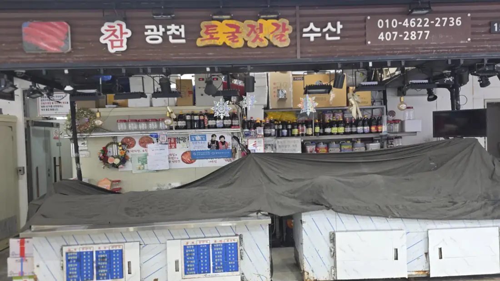

🥢
새우젓
샘플 메뉴광천 젓갈 대표 품목 예시
가격 확인 중판매 확정 전
밥상에 깊은 감칠맛을 더하는 젓갈
현재 각 입점 업소는 입점을 준비 중이며, 본 페이지는 샘플 페이지입니다.
메뉴·가격은 샘플 또는 촬영 당시 참고 정보입니다. 실제 판매 품목과 가격은 입점 업체 확인 후 확정됩니다.촬영한 간판에 표기된 광천·토굴젓갈을 중심으로 수산가공품 소개 샘플을 만들었습니다. 매대가 덮여 있어 실물 판매 품목과 가격은 확인하지 못했습니다.

가락몰 수산 구역 · 정확한 호수 확인 필요
정식 메뉴·가격·주문 방법·방문 안내는 업체 확인 후 업데이트됩니다. 현재는 샘플로만 제공됩니다.
입점 준비 매장 더 보기 →